KITCHEN PRIDE · PREPARATION
전처리·가공 제품 카탈로그
사진을 확인하고 필요한 제품을 문의해 주세요.
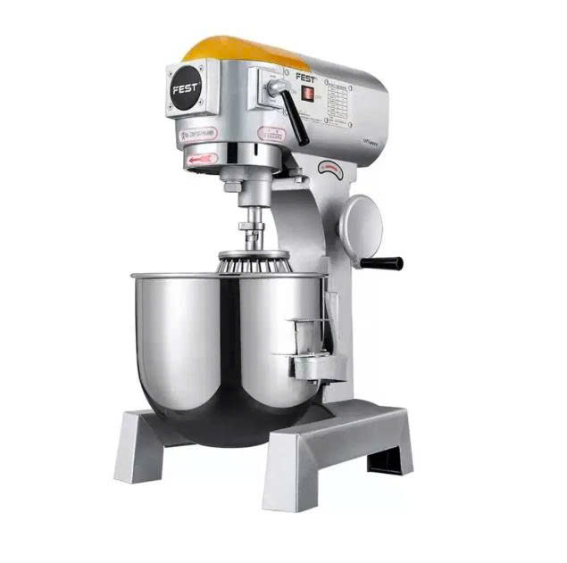
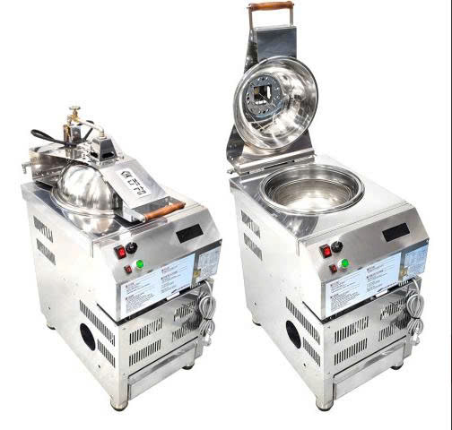
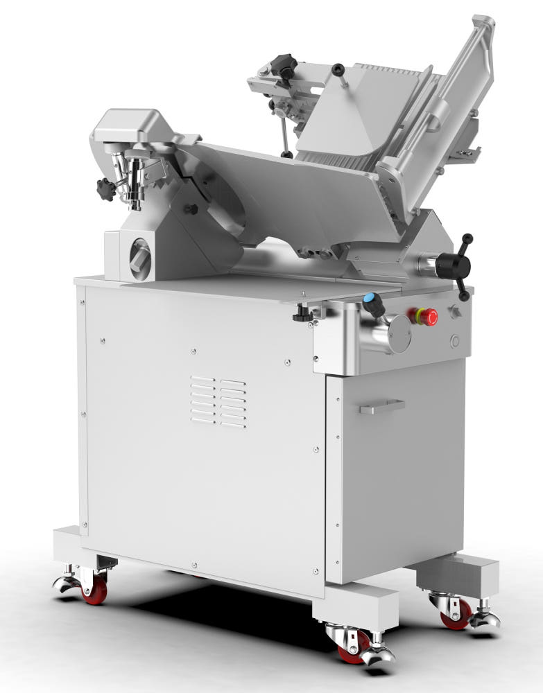
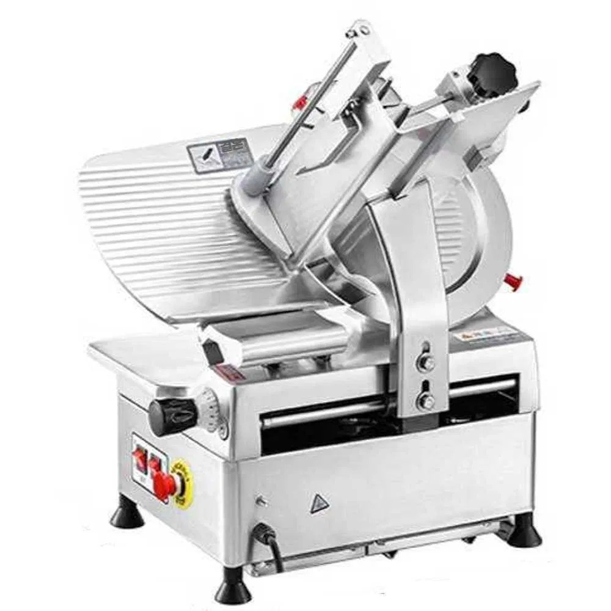
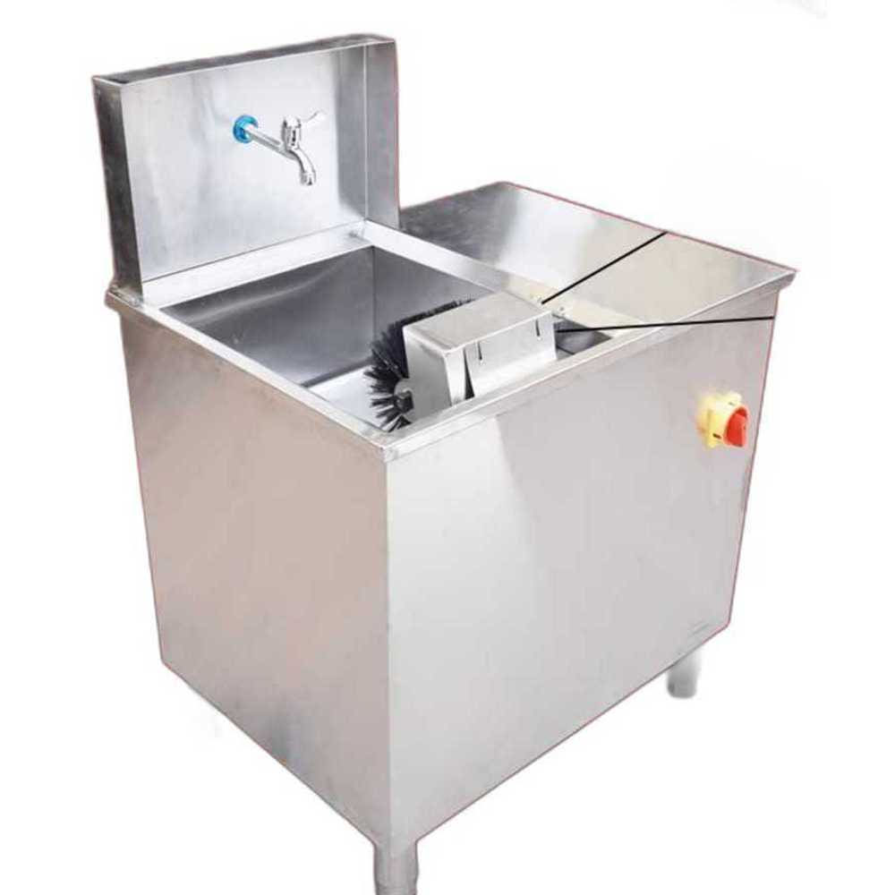
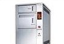
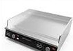
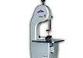
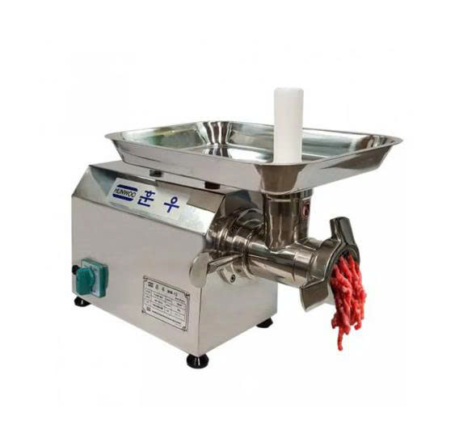
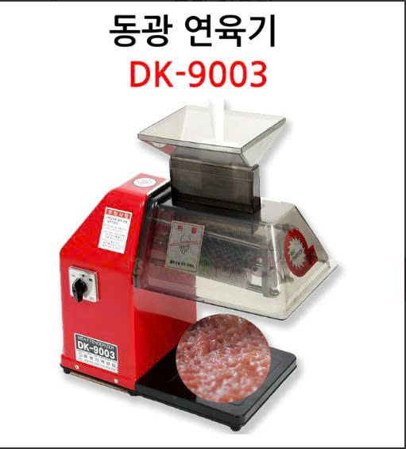
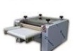
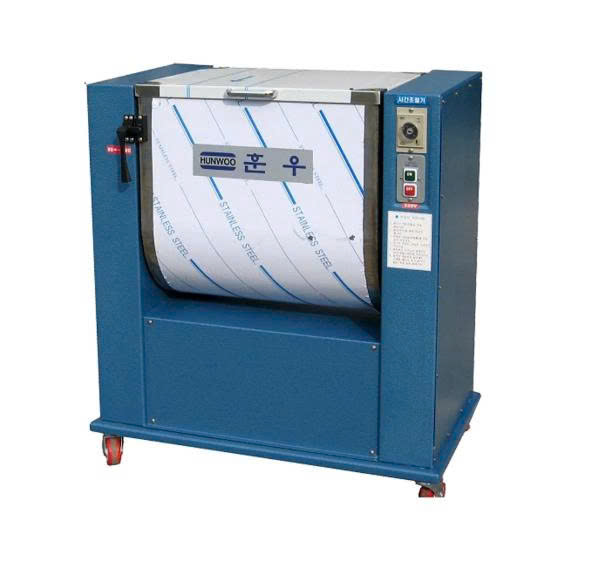
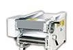
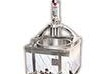
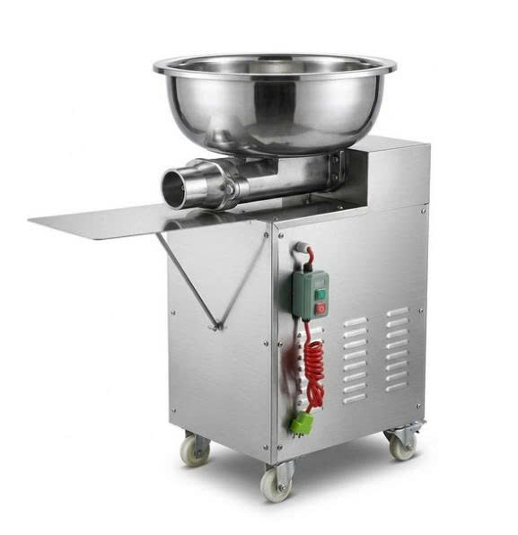
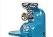
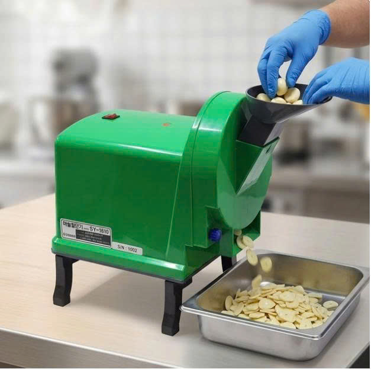
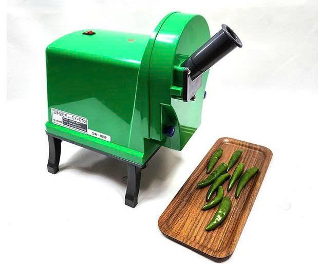
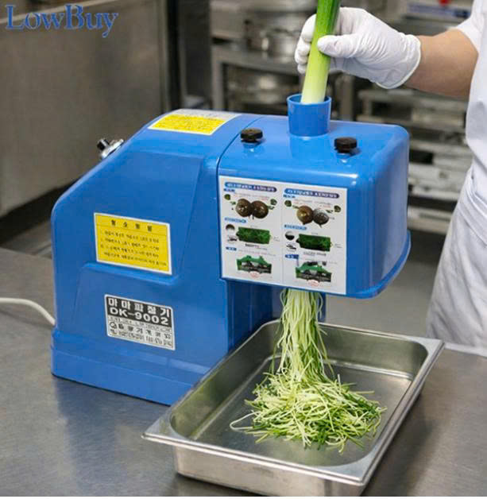
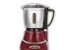
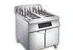
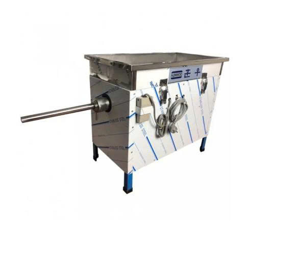
Let's talk kitchenware
필요한 주방용품과 구성,
함께 찾아보겠습니다.
제품명이나 필요한 용도를 알려주시면 상담해 드립니다.
Office · Vietnam0242 123 8009Mobile · 098 648 0220
전화하기 ↗